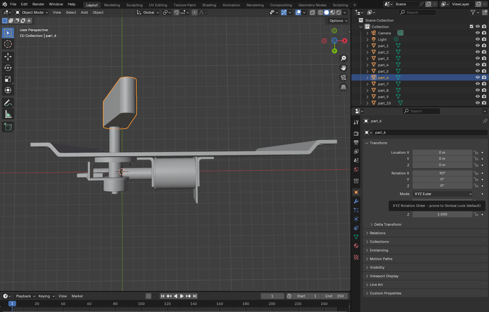
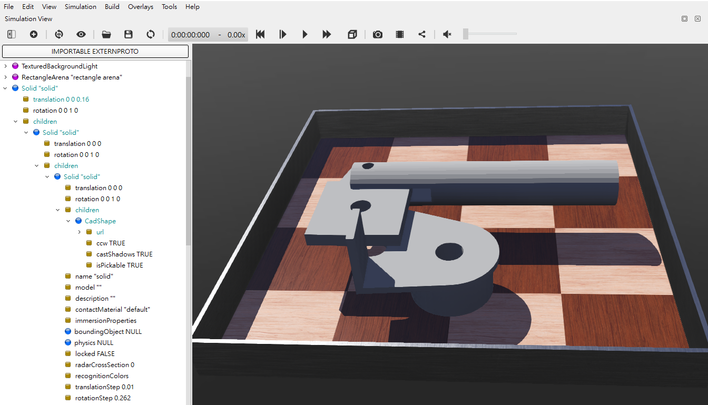

Tutorial_1 <<
Previous Next >> Using_C
CadShape
可攜系統:
下載 python_2025_lite.7z (428 MB, 解開壓縮後約 1.5 GB)
下載 NX2312 可攜 CAD 壓縮檔案 (1.85 GB, 解開後約 9 GB)
nx2312_Drafting.7z
nx2312_nxplot.7z
Webots_2023b.7z (168 MB, 解該後約 900 MB, 部分 Proto 原型節點取用官方網路檔案)
Webots_2023b_for_cd2025.7z (900 MB, 解開後約 2 GB, 能使用可攜系統中的 Proto 原型節點)
Blender4.2.7z
https://www.cyberbotics.com/doc/reference/cadshape
Webots 可以利用 CadShape node 導入 Collada (.dae) or Wavefront (.obj) 零件, 其中 Solvespace 與 NX2312 都能輸出 .obj 零件格式, 但 Webots 並沒有如 CoppeliaSim 自動分割組立件的功能, 必須自行處理.
利用 Python 分割 .stl 組立件:
split_stl.py
Python 分割 .stl 組立件, 同時將零件從 .stl 轉為 .obj 檔案格式:
split_stl_and_obj.py
從 Solvespace 或 NX2312 轉出的 stl 組立件, 利用上列程式分割出各 stl 零件時, 同時轉為 obj 零件格式, 之後將各 obj 零件拖曳至 Blender4.2.7z 後進行改名, 如下圖所示.

從 Blender4.2.7z 取得各 obj 格式零件名稱之後, 再利用 CadShape node 將各零件導入 Webots 場景, 如下圖所示.

當利用 Python 程式將 stl 格式的 組立件進行分割且轉為 obj 的過程, 可以針對尺寸比例進行轉換, 例如: 將原先 mm 轉為 cm 或 m 的相關座標數據.
split_stl_to_obj_scale.py 將 mm 轉為 cm 的 pinball obj 導入 Webots 場景如下圖所示:

Tutorial_1 <<
Previous Next >> Using_C